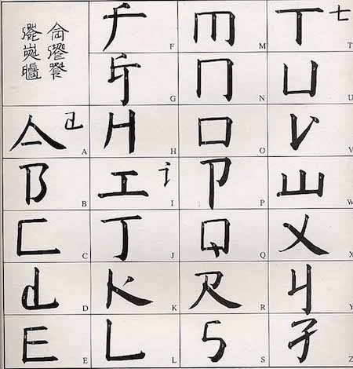
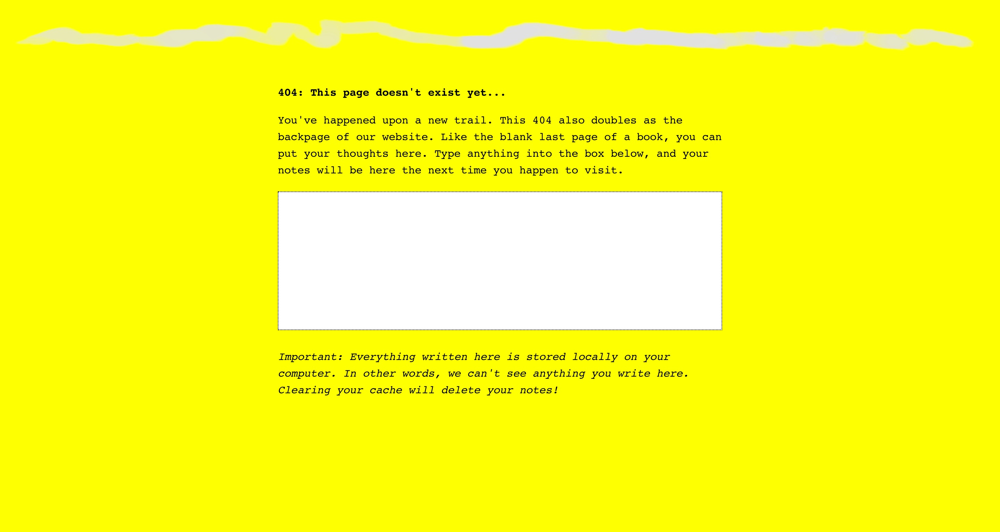

weeks 12 & 13November 9–November 22

— Deconstruction, no. 1 by Kyuha Shim
Depth to pixels.
Vocabularies of Computation: An Interview with Kyuha (Q) Shim:
“After all, there are many ways to draw an outlined circle.”
“Computation is, first and foremost, my primary medium. It is a lens with which and through which I take an analytical perspective to see things as generative pattern, a combination of parameters and algorithms. Not everything is made out of rules, but I love to decode logic encrypted in artifacts. At the same time, computation is a material with which I build systems that can automatically repeat tasks, which yields continuity and actually feels like real-time. It enables me to play with contingent, complex, data-driven, and improvisational aspects of formation.”
The interviewer also asks,
“Can an algorithm have style?”
Shim responds by saying that depending on the rules, yes, an algorithm can have style due to the visual patterns that it creates.
(November 16th)
Capstone ideation thus far:
Repeatedly asking the wrong questions
But it was still valuable to ask them anyway.
The questions that keep sticking around are the ones with no definitive answer. Hence circulation and rumination. For some reason I don’t take that as a cue to move on. But now I know I need to move in a specific direction and think in more concrete ideas instead of abstract theories. Nothing like deadlines to motivate decision-making. Though good things take time, there is not always time. Good things also take experience to make.
Ben framed it really well: what I should be aiming for is an instructive experience. Learning is what drives me the most and has the longest-lasting impact. It means way more than thoughtlessly making cool-looking things. I wasn’t really convinced on the ideas I had for longer than a day because they were more about proving a naïve point instead of learning something new and gaining an insight. The truth lies in the process. Outlining objectives will help me determine which project to pick. It’s far less dogmatic to approach it this way, which is why my earlier ideas just didn’t feel quite right.
How could I forget,
Learn learn learn (and have some fun)
The balance I’m trying to aim for is manageable form, coherent content/concept, interesting/based on something I know I like, appropriate for long-term work, involves personally relevant precedents and interesting historical examples.
One thing I’ve noticed is that recently read things really influence what I consider a good idea for a day. I’ve started looking at enduring interests instead and digging at why certain projects still feel significant even if I’ve improved since making them.
The National performed their song Sorrow for 6 hours straight. The idea was made in conjunction with conceptual artist Ragnar Kjartansson who does some work involving endurance and repetition.
“Thanks to The National for A Lot of Sorrow!”

— the alphabet

– “art for the people”
Xu Bing created a writing system called “square word calligraphy” that formally looks Chinese but is actually legible (for the most part) to English readers. The more legible calligraphy pieces in this system are the ones that contain familiar content, so the context of the words helps those familiar with the texts read it. The bigger pieces are still read vertically, column by column.

— Lynö by Radim Peško & Karl Nawrot
From Peško’s site: “They are open and various, and their spirit is this: to resist normative tendencies and to reject the idea of definitive form.”
The thing is, all legible letters are normative and definitive in the skeletal sense. Letters are shapes, but not strictly defined ones… it’s hard to write the definition of an A, because it also depends on the context of the other letters in the typeface. When you see or read an A, it is an A. Letters are not like circles and squares which are mathematically definable.
Lynö is able to work because it is still based on the alphabet. As whacky as it may look, it’s really not that crazy because it’s all still readable. That’s what makes it usable and worth making. The ability to call Lynö a type family is also based on proportion and stroke weight. An consistent color is present.
Still some questionable things: why were some of the letters in the font Jean not mutated? Anyway, Jean is the one I see used most often from Lynö. It gives a weird inky materiality to the letters.
— Table with Two Legs by Ai Weiwei
Weiwei renders a traditional Chinese styled table unusable and exposes its ornament.
Craft and automation
What is the role of craft today? What can craft mean?
It could be seen as a resistance against the inhuman speed of automation. Craft is largely repetitive, demanding patience and precision and care from the crafter. These tasks could be automated, but at times the emotional care put into making physical objects can be absent. Each mistake from the machine is a huge distraction, just as a craftsman’s carelessness. Automation is a means of getting to the middle of the process quicker, not always as a means to the end.
How can automation be poetic and not just industrially efficient?
In bookbinding we had to make two coptic-stich books in about 2 weeks basically. The binding takes longer to do since it’s designed for larger books, and it also requires more practice to make a decently put-together book. Our previous projects had max 15 pages of content, and for this one we were required to make two books with, at minimum, 120 pages each. So there was this problem of practicing the binding and having to fill several pages. There was no way I was going to fill the pages with hand-drawn things or collages and whatnot, at least not in a personally conceptually fulfilling way in such a short amount of time.
I probably ended up spending just as much time as anyone else who drew in their books. I chose to quantify a lifetime in a book by automating a year’s worth of dates for each spread of my book. I ended up making a 206 page book, which meant more time required for binding, since the coptic bind is threaded signature by signature. The book is an inherently modular and repetitive structure and bookbinding is consequently a repetitive task: cutting sheets of paper, scoring and folding each sheet, creating signatures, punching holes in each signature, repeating stitching patterns and motions of the arms.
It was kind of jarring designing the book. I used a spreadsheet to generate a year’s worth of dates starting from September 9, 1997 (the day I was born). Then I just used find and replace in InDesign for each spread to change the year. Passing from 1997 to 2018 and finally to 2096 (an ambitious year to live to) was surreal. 2050? What the heck is 2050 gonna be like? The years just gradually increase with each page turn. The days that I had already lived were striked-through. Future dates to be crossed out post-printing will be crossed out with a pen. It’s an impersonal journal of sorts. No day’s content, just an acknowledgement of its passing.
Some people were freaked out in thinking that I typed out my entire book date by date. The scale and the repetition of the book is inhuman. But the craft was entirely hand-done/body-generated, including the guillotine-cut text block (which destroyed one edge of my book). One person called it an uneconomical calendar, which I didn’t even think about. I saw the text block as a poetic thing, less so of a utilitarian design. The book isn’t “finished” until I die.
Anyway it’s always nice to make a thing that actually garners a reaction of some sort and that considers the form of the book. I was questioning the value of printed type specimen, but it they’re actually quite valuable for archival purposes. Archiving digital material is still a volatile thing. Books are great. They won’t die, even if reading changes.

— the 404 page for The Creative Independent
Now I’m trying to figure out how the form of the book can influence web design—but I’m thinking it should largely remain separate. How the web and coding can influence book design/content, though, is the more intriguing question.
Caligraft is a project by Ricard Marxer Piñón about “crafting computational calligraphies”.
Not about imitating or simulating calligraphy, but reconsidering what motion can mean in the digital context, with influence by generative art.
The website is also pretty outdated and slow, not even loading anymore. How can websites be archived yet remain interactive?

— found on Erik Carter’s Are.na channel “Do you want typography or do you want the truth”; block is by Desmond Wong, which he found on the terrifying website Fight for UX
Hilarious. But oh man. Is UX only accessible through homogenous practices?
Reminds me of Laws of UX. And my reaction to that was skeptical, but not as negative as my reaction toward Fight for UX, which uses American propaganda figures to relay their message for a “humanist” but aesthetically militant (and perhaps fundamentally capitalist and impersonal) view toward UX.
It also reminds me of how the microinteractions textbook can be somewhat dogmatic. It’s all in service of the “user”. I mean it’s not all untrue, but it’s not quite encouraging of redefining best practices and expanding conventions. Why is it important to look beyond convention if it’s accessible? Because conventions are products of a different time that may reflect misaligned values. Re: consumerism and capitalism.
Why do I resonate with Taeyoon Choi and the School for Poetic Computation moreso than these practical, industrial, potentially superficially empathethic/humanist UX guides?
Control Care.
The language these sites (Laws of UX, Fight for UX, School for Poetic Computation), visual and written, is also all really powerful in how I choose to interpret them.
— Are you human? by Aram Bartholl
Captcha words (M6Cs3T) made out of mat board and adhered near graffiti.
— Map by Aram Bartholl
— OI by Aram Bartholl

— ZXX typeface by Slavoj Žižek
Making Democracy Legible: A Defiant Typeface: “We feel free because we lack the language to articulate our unfreedom” (Žižek).
In talking about digitally native typefaces, Ben mentioned that someone made a typeface that is only human-readable by rendering OCR (Optical Character Recognition) machine unreadable.
Another note: artificial intelligence can’t determine beauty or experience the sublime without being programmed to do so (and even then…).
— Letter & Spirit by Dexter Sinister
The font Meta-the-Difference-Between-the-Two-Font-4-D intends to bridge historical precedents with parametric design. Sinister asks “How to keep things moving? … what if we make one of those parameters time itself?”
I had the quote “I follow the spirit of the law not the letter” saved before watching this video but did not know that it comes from judicial practices and precedents. I was considering trying to define letters in terms of language in order to abstract letters using letters… but after trying to think about how to define each letter, it was basically impossible since the image, perception, and understanding of a letter also depends on its context. An E can be described as 3 horizontal lines parallel to each other and connected by a vertical line. But without the vertical line, the E could still be read as an E. Additionally, the definition doesn’t describe how far apart the 3 horizontal lines are. Letters are weird! Though they are pure shape, they can’t be mathematically defined like a circle or square. It’s quite simple: an E is an E if it looks and reads like an E. Though letters are visual, they are at the core immaterial and completely abstract.
I have also been reading about Ludwig Wittgenstein, a philosopher who focused on language’s limits and function. A frequently cited quote of his is “What we cannot speak about we must pass over in silence.” Since letters are the basic unit to written language, it’s quite difficult to break them down any farther. They are not merely line compositions. So I have just come to accept a letter for a letter and to keep moving on. It is what it is. What I have come to observe is the changing meaning of “movable type.” For Latin characters, it began with Gutenberg, moved into wood type, hot-metal typesetting, phototypesetting, typewriters, (what else?), and now digital typesetting. Movable type now can involve fluid time and movement, live transformations. Can type ever become unstuck from rectangles?
After hearing about Metafont again, I decided to actually look into what it is and what it makes. It doesn’t aesthetically work too well but it’s undeniably impressive: “The Concept of a Meta-Font” by Donald Knuth. I though about making a parametric typeface, which I kind of did for the CSS typeface project, but after seeing Metafont and Spectral, I’m not actually into it that much, weirdly. It’s not really type design, and too many broad parameters means the typeface loses its identity.
Nina Katchadourian on improving upon self and the world, observing what exists and how interference is received.
— “GIFT/GIFT” by Nina Katchadourian
Nina did a piece in 1998 in which she attempted to mend a spider’s web with pieces of thread spelling “gift.” The spider rejected the gesture, batting at the letters.
Poetic Computation: Reader: Taeyoon Choi wrote a book about poetic computation that was supposed to fully released by now but unfortunately only 3 chapters are available as of now. He elaborates on the role that poetics of code can play on aesthetics and how understanding the mechanisms can unlock the language of these programmed processes.
“Repetition is a powerful way to perform complex tasks by breaking them down into a series of a simple operations, enabling a basic pattern to scale to larger, more abstract and complex structures. We might note that repetition is also an essential technique of poetry. The images, in their abstraction, also hold a sense of the sublime for me. The sublime is the experience of something that is beyond judgment, such as having a transcendent encounter with nature. This sublime elegance in computation propelled me to ask if we could use these aesthetics to envision a different narrative of technology.”
— from Chapter 01 of Poetic Computation
Describing the computational poetics as a form of the sublime is just right. I’ve been trying to articulate it, but it is not completely able to be articulated, only observed and experienced.
He also describes immaterial drawing, seemingly boundless, as “free drawing in the air.”
We’re pressured to commercialize what we learn. I mean, one kind of has to to make money? Not really sure how I’m going to harmonize with capitalism as someone who is uncompetitive with hardly any entrepreneurial spirit, who also has trouble with hierarchy and authority.